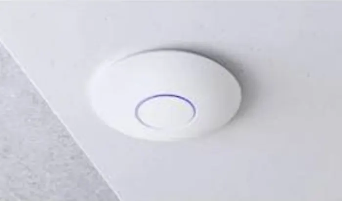
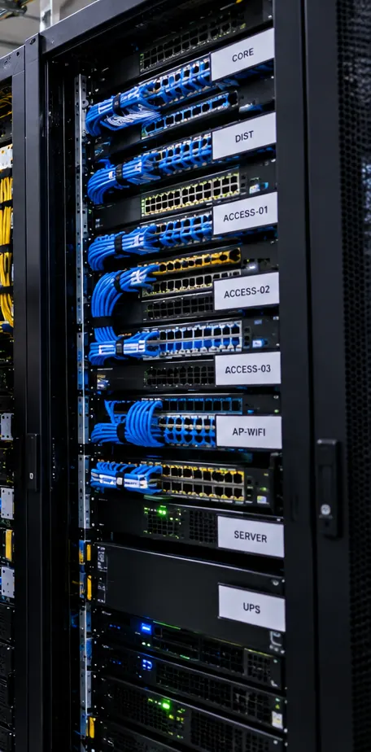

Perangkat IT NetraLink
Perangkat Jaringan
Perangkat aktif untuk LAN, WiFi, dan konektivitas internet, dari skala kantor kecil hingga gedung bertingkat.

Yang bisa kami sediakan
Satuan maupun partai, lengkap dengan penawaran resmi untuk kebutuhan proyek, kantor, dan instansi.
Galeri

IlustrasiGambar berlabel "Ilustrasi" adalah visual pendukung, bukan foto proyek.
Proses kerja
Solusi per sektor
Pertanyaan umum
Apakah bisa beli perangkat IT saja tanpa instalasi?
Bisa. Kami melayani pengadaan perangkat IT dan aksesoris satuan maupun partai, dengan quotation resmi untuk kebutuhan pengadaan kantor dan instansi.
Area mana saja yang dilayani?
Kami beroperasi dari Makassar, Palu, dan Jakarta, dan dapat menangani proyek di seluruh Indonesia sesuai kebutuhan.
Apakah ada survey sebelum pekerjaan instalasi?
Ya. Setiap proyek jaringan gedung diawali survey lokasi untuk menyusun desain, BOQ, dan penawaran yang akurat.
Apakah tersedia layanan maintenance setelah instalasi?
Tersedia. Kami menyediakan maintenance berkala, penanganan gangguan, dan dashboard monitoring agar jaringan tetap terpantau.
Bagaimana cara meminta penawaran?
Isi form Request for Quotation di halaman ini atau chat WhatsApp kami. Sertakan daftar barang, jumlah, dan lokasi, lalu tim kami akan mengirimkan penawaran.
Minta penawaran Perangkat Jaringan
Sertakan daftar barang atau kebutuhan, jumlah, dan lokasi — tim NetraLink akan mengirimkan penawaran.